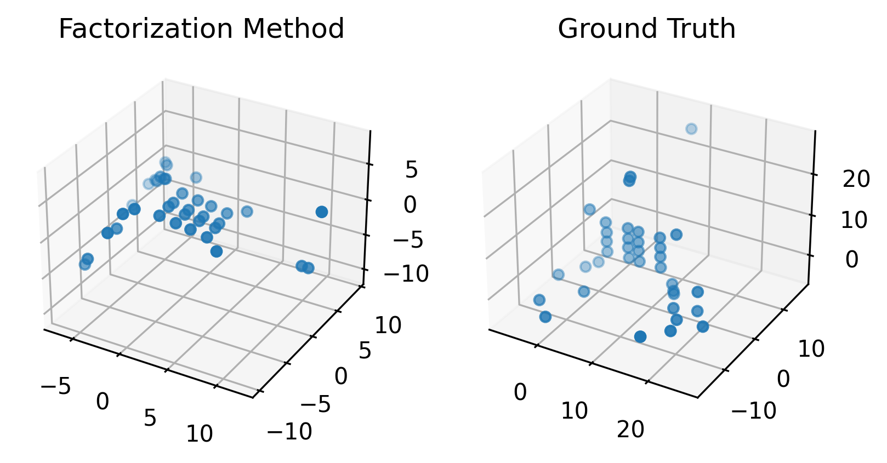
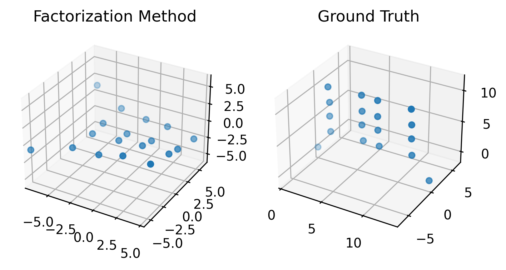

Return to Assignment 4 Overview
The implementation for P3 part a can be found in the submitted p3.py file.
To implement the factorization method, I started by creating a measurement matrix W using the x and y coordinates of the corresponding points from both images. I then calculated the mean of each row using np.mean and subtracted it from the corresponding row to center the points. Next, I used np.linalg.svd to decompose the measurement matrix. I kept the first three singular values and their corresponding singular vectors, since we are trying to recover a three-dimensional structure. I took the square root of the three singular values and used them to calculate the motion and structure matrices through matrix multiplication.

Looking at the results, I noticed that the reconstructed points have a different orientation and scale compared to the ground truth. However, the overall distribution of points is similar. This difference occurs because the factorization method recovers the structure in a different coordinate system so the reconstructed points do not necessarily have the same rotation or scale as the original points. The SVD factorization can also introduce an affine transformation ambiguity since multiple different 3D structures could produce the same 2D points.
The four singular values calculated from the full measurement matrix were:
[959.5852, 540.4761, 184.4317, 27.9152]All four singular values are nonzero because there is some noise in the points, so the data does not perfectly match the ideal case. Ideally, I would expect only three nonzero singular values because the measurement matrix is made up of a 4x3 motion matrix multiplied by a 3xN structure matrix. This means the measurement matrix can only have a rank of 3 or less, so the fourth singular value should be zero.

When I used the smaller subset of corresponding points, I noticed that the reconstructed structure no longer matched the ground truth as closely. The points appear to have a different arrangement even after accounting for the rotation and scale differences. Since the subset contains fewer correspondences, there is less information available to estimate the three-dimensional structure. This makes the factorization more sensitive to noise and can result in a less accurate reconstruction.
The four singular values calculated using the subset were:
[264.5440, 210.0607, 7.2192, 5.1286]Compared to the full dataset, all four singular values decreased. The third singular value decreased significantly from 184.4317 to 7.2192, while the fourth decreased from 27.9152 to 5.1286. I also noticed that the third and fourth singular values are now much closer together. This suggests that the subset contains less information about the third dimension, making it more difficult to distinguish the three-dimensional structure from noise. This helps explain why the subset reconstruction does not match the ground truth as closely.